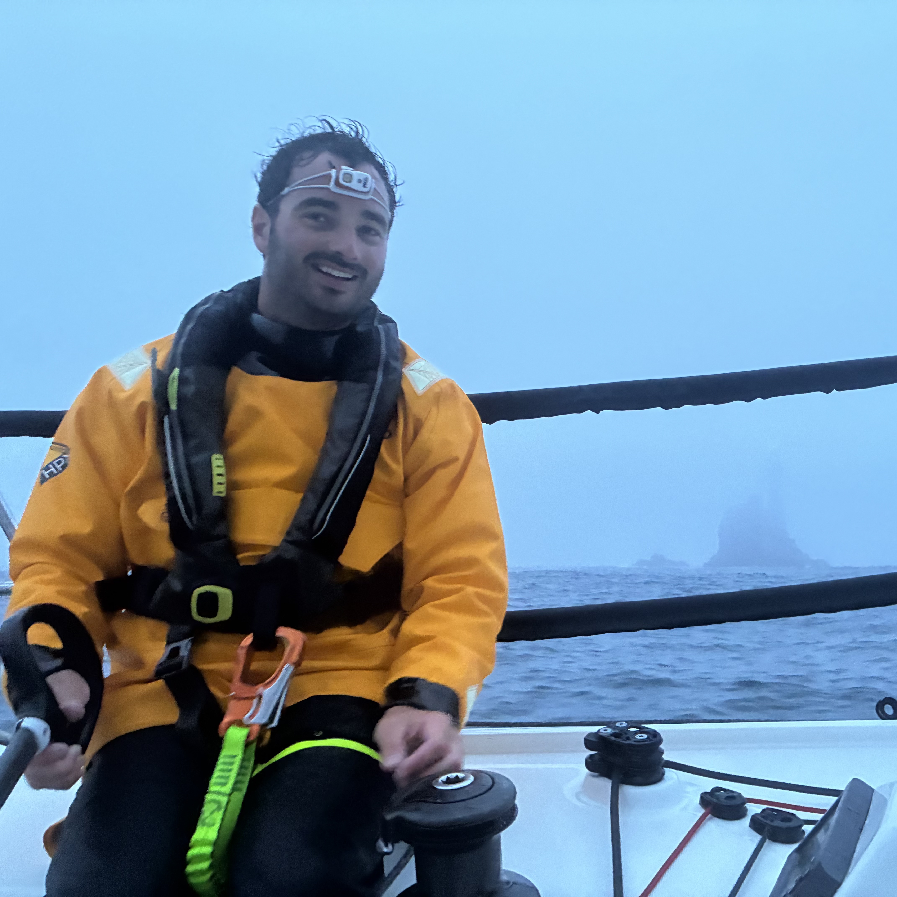

Salut! I am a paleoclimatologist/ paleoceanographer and Postdoctoral reasearcher at the Alfred Wegener Institute
My research focuses on reconstructing past atmosphere–ocean–cryosphere interactions in the Southern Ocean, with a particular emphasis on millennial-scale variability across multiple glacial–interglacial cycles. I use geochemical and sedimentological proxies, including lipid biomarkers and grain-size analyses, to investigate the role of the Southern Ocean in modulating ocean circulation, westerly winds, Patagonian and Southern Alps ice sheets, greenhouse gases, and their combined influence on global climate.
Contact
Email: vincent.rigalleau@awi.de
ORCID: [0009-0006-3837-9679]
Google Scholar: Vincent Rigalleau
ResearchGate: Vincent Rigalleau
Instagram: VinRigalo
While studying paleoclimatology: Rigal's mix